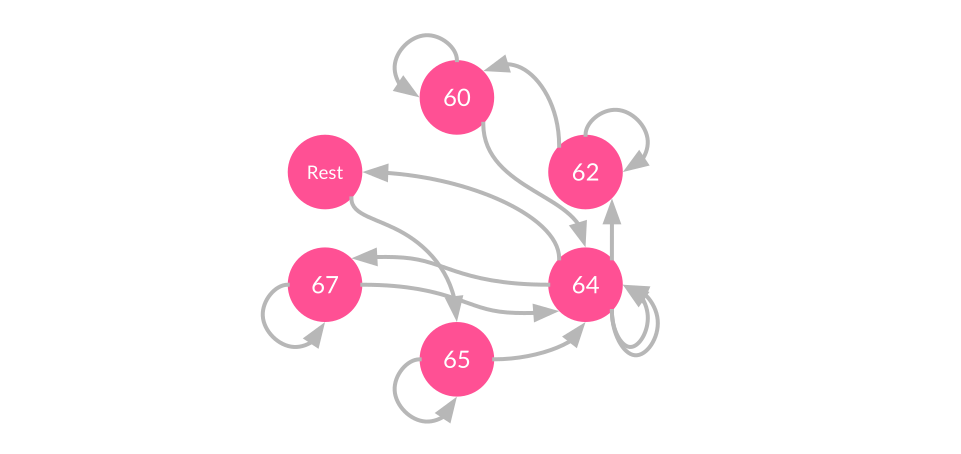

Part 1: Notes On Time
In this section, we're going to discuss a couple of notes on timing, and see how we can ensure that all our notes arrive on time.
When dealing with musical applications, we need to pay special attention to the aspect of timing. More so than in other channels like visual information, humans are sensitive to sound - and can detect discrepancies at millisecond resolutions.
This means that when developing music applications, we need to make sure that we can accurately schedule sounds when we want them to happen, and have the computer reliably play back those sounds when we expect them to.
Background
A basic p5.js program (called a "sketch") generally has a setup function that runs once, and a draw loop that repeats at a certain frame rate.
var xpos = 0;
// Runs only once, when the page loads
function setup() {
createCanvas(windowWidth, windowHeight); // Canvas size fills its container
}
// Runs after setup, and repeats 60 times a second by default
function draw() {
background(255, 0, 0); // Paint the background red (RGB color)
ellipse(xpos, height/2, 50, 50); // Draw an ellipse with width = height = 50
// Increase the x-position on each loop
xpos = xpos + 1;
// Reset the x-position if it reaches the edge
if (xpos > width) {
xpos = 0;
}
}
The setup and draw functions are special p5.js functions which are used typically for program initialization and animation respectively. In this example, the setup function simply creates a blank canvas, and the draw function draws a circle to the screen, updating its x-coordinate on every cycle (according to the frameRate).
The output of this program looks like this:
A typical p5.js program, known in the p5 community as a "sketch".
To control how frequently the draw loop repeats, we can set the frame rate of the draw loop using the frameRate() function. Keeping our eyes on the goal of making music, this implies that we can get some sort of regular clock/timer using the draw loop. For example, if we wanted to make a metronome app that beeps at 60 beats-per-minute (BPM), we might do the following:
var synth;
var bpm = 60; // Metronome ticks at 60 beats-per-minute
function setup() {
createCanvas(100, 100);
synth = new p5.PolySynth();
frameRate(60 / bpm); // Frequency = 60 seconds / beats-per-minute
}
// Repeats 60 times a second by default
function draw() {
background(255); // Paint the background white
synth.play(440); // Play a short note at 440Hz
}
However, there’s a problem with this approach, which is that the draw loop was not designed for timing-critical applications. Therefore, the frame rate we set may not be strictly adhered to - the loop may run slower if for example the draw loop has a large amount of graphics to render or your browser is running many active tabs.
The Solution
To handle the need for precise audio scheduling, the p5-sound library offers an alternative scheduling mechanism called the SoundLoop. Using the SoundLoop, we can build a metronome as before, with just a slight change in code:
var synth;
var sloop;
var loopInterval = 1; // Loop interval of 1 second corresponds to 60 BPM
function setup() {
noCanvas();
synth = new p5.PolySynth();
// Create a SoundLoop which calls mySoundLoop every loopInterval seconds
sloop = new p5.SoundLoop(mySoundLoop, loopInterval);
sloop.start();
}
function mySoundLoop(cycleStartTime) {
// Play a note at 440Hz, velocity of 1 (full volume),
// The note is scheduled to begin at the start of each cycle,
// and is held for a duration of 0.5s
synth.play(440, 1.0, cycleStartTime, 0.5);
}
The SoundLoop introduces a couple of new concepts which we will explain later in this tutorial, but for now, notice that in this case there is no more draw loop - the draw loop is optional if we are only using sound, but in many cases it will be useful to have both the SoundLoop and draw loop, to handle audio and visuals respectively.
To convince ourselves that the SoundLoop is better for scheduling audio, let's compare the two approaches by listening to both metronomes together in the same sketch:
Comparing the timing accuracy of the draw loop versus the SoundLoop. The loops don't necessarily start in sync; what's important is to observe the consistency in their individual cycles. Scroll away or switch focus to a different tab to see an obvious difference in behaviour!
Notice that when you first start the sketch, the two tones are in sync, but after some time they start to have a perceptible drift in timing, especially if you scroll away or switch to a different tab (the browser allocates fewer resources to unfocused tabs, so the draw loop is neglected). The difference may be more or less obvious depending on your processor speed, but in general the SoundLoop will always be more reliable for scheduling sounds than the draw loop. This is because the SoundLoop is built on Web Audio clock, which you can find out more about in this article by Chris Wilson.
Best Practices for Musical Timing
So now, we have some inkling of how to build p5.js sketches with accurate timing information. But how do we go from our humble metronome to that supercalifabuloustic-interactive-musical-journey you have in your head?
Perhaps the best way to answer this is to look at some examples and see how we might handle them.
Instantaneous Reaction
One of the most common use cases for audio in programs is as instantaneous feedback for user interactions. Whether you’re working on a 2018 revamp of Space Invaders which goes ZZZZOOP on every laser fired, or a simple navigation menu whose buttons BOOP, you’re going to want to set up your sounds to be triggered instantaneously based on certain events.
In this basic type of scenario, there is no need for the SoundLoop or any advanced scheduling. All we need to do is simply instantiate our sound object in setup, and play that sound in the event handler.
We will explore such a scenario in the context of creating a virtual piano application. For our virtual piano, we will use a PolySynth object to produce sounds, and the keyPressed and keyReleased events to start and stop the sounds:
var synth;
var keyOrder = "ASDFGHJKL";
var keyStates = [0,0,0,0,0,0,0,0,0];
function keyPressed() {
keyIndex = keyOrder.indexOf(key);
// Check if valid note key pressed
if (keyIndex >= 0) {
// Update key state
keyStates[keyIndex] = 1;
// Play synth
midiNoteNumber = baseNote + keyIndex; // 0-127; 60 is Middle C (C4)
freq = midiToFreq(midiNoteNumber);
synth.noteAttack(freq, velocity, 0);
}
}
function keyReleased() {
keyIndex = keyOrder.indexOf(key);
// Check if valid note key pressed
if (keyIndex >= 0) {
// Update key state
keyStates[keyIndex] = 0;
// Stop synth
midiNoteNumber = baseNote + keyIndex; // 0-127; 60 is Middle C (C4)
freq = midiToFreq(midiNoteNumber);
synth.noteRelease(freq, 0);
}
}
And the result of that would be something like this:
A simple virtual piano program. Type "ASDFGHJKL" to play!
Playing A Sequence of Notes (Static Scheduling)
In another situation, directly relevant to interactive and algorithmic music composition, we might want to play a sequence of notes.
For example, let's say you want your sketch to play Mary Had A Little Lamb. First, you need to figure out how to represent your sequence of notes. There are a great many ways to do this, but perhaps one of the most intuitive representations is to just list out all the notes along with their velocity and timing information, like so:
var song = [
// Note pitch, velocity (between 0-1), start time (s), note duration (s)
{pitch:'E4', velocity:1, time:0, duration:1},
{pitch:'D4', velocity:1, time:1, duration:1},
{pitch:'C4', velocity:1, time:2, duration:1},
{pitch:'D4', velocity:1, time:3, duration:1},
{pitch:'E4', velocity:1, time:4, duration:1},
{pitch:'E4', velocity:1, time:5, duration:1},
{pitch:'E4', velocity:1, time:6, duration:1},
// Rest indicated by offset in start time
{pitch:'D4', velocity:1, time:8, duration:1},
{pitch:'D4', velocity:1, time:9, duration:1},
{pitch:'E4', velocity:1, time:10, duration:1},
{pitch:'D4', velocity:1, time:11, duration:1},
// Chord indicated by simultaneous note start times
{pitch:'C4', velocity:1, time:12, duration:2},
{pitch:'E4', velocity:1, time:12, duration:2},
{pitch:'G4', velocity:1, time:12, duration:2}
];
Then, you could use a for-loop to schedule all the notes to occur at their respective timestamps:
for (var i=0; i<song.length; i++) {
var note = song[i];
synth.play(note.pitch, note.velocity, note.time, note.duration);
}
This works, but an important thing to realize is that once you’ve scheduled a sound to occur, you can’t stop it, alter it, or interact with it anymore. This program runs through the entire loop almost immediately, locking all current and future notes into the scheduler so there's no going back.
Imagine a case where you have composed a groovy ‘60s dance hit in your sketch, and you send it to your friend Tracy. Tracy opens up your sketch and turns it on, enjoying the music until she is rudely interrupted by the Fun Police, who remind her that this is a library and you can't play music here. The volume buttons on Tracy’s laptop are broken, and the strange flavor of Linux she uses doesn’t have a sound control panel. She tries to pause the music, but to her dismay she realizes that this isn’t possible because all the notes have already been scheduled to occur the moment she started the sketch. Ashamed, she hangs her head and tells them that she’s sorry, but you can't stop the beat.
While your users may never face this exact situation, in many cases you might realize that you don’t actually want to schedule all notes right away, and in the case of interactive music we need to be able to alter, add and remove notes on the fly according to your interactions. To add this interactivity, we turn to our trusty ol’ SoundLoop.
Playing A Sequence of Notes (Dynamic Scheduling)
In this section, we look at an alternative and more powerful way to play our sequence of notes, using the SoundLoop introduced briefly earlier. Let's begin by looking a little more closely at the SoundLoop at how it works!
The SoundLoop provides users with a way to access the Web Audio Clock for accurate audio scheduling. Recall the example from before:
var synth;
var sloop;
var loopInterval = 1; // Loop interval of 1 second corresponds to 60 BPM
function setup() {
noCanvas();
synth = new p5.PolySynth();
// Create a SoundLoop which calls mySoundLoop every loopInterval seconds
sloop = new p5.SoundLoop(mySoundLoop, loopInterval);
sloop.start();
}
function mySoundLoop(cycleStartTime) {
// Play a note at 440Hz, velocity of 1 (full volume),
// The note is scheduled to begin at the start of each cycle,
// and is held for a duration of 0.5s
synth.play(440, 1.0, cycleStartTime, 0.5);
}
Some important things to take note of:
- We need to instantiate a SoundLoop object.
- The SoundLoop constructor takes in two arguments: the callback function, and the loop interval.
- The callback function is called regularly according to the chosen loop interval, and there is a cycleStartTime parameter passed into each callback, which gives us the look-ahead time we can use to do precise scheduling.
The concept of cycleStartTime deserves a bit more explanation, because it is tricky to understand at first. The cycleStartTime gives us the ideal time that the current cycle of the SoundLoop is supposed to occur at.
For example, we want our SoundLoop to repeat at 1-second intervals, so if we start at time 0 we want the SoundLoop to repeat at time 1, 2, 3, 4, and so on. In practice, the SoundLoop code may be executed at a slightly different time, perhaps at times 1.07, 1.98, 3.11, 4.01. Therefore, whenever we schedule audio within a SoundLoop, we should always schedule against the cycleStartTime instead of the actual time that the code is running at. This ensures that even though the program execution time may deviate slightly from the plan, our scheduled audio will always be correct because we are using the ideal cycleStartTime.
Okay, enough chat! How does all of this look in practice?
Using the SoundLoop to play our sequence of notes, things get a bit more complicated than before. Instead of a using a for-loop to loop through the array, we use the SoundLoop as though it were a while-loop. We can change the interval between loop iterations to match the duration of each note and try to do something like this:
function soundLoop(cycleStartTime) {
var note = song[noteIndex];
synth.play(note.pitch, note.velocity, cycleStartTime, note.duration);
this.interval = note.duration; // Hold off the next cycle until this note is done
noteIndex++;
if (noteIndex >= song.length) {
this.stop(); // Stop the SoundLoop if we've reached the end of the song
}
}
But if you look closely (or try running the example yourself), you will realize that this doesn't work because each cycle plays only one note, and notes that we intended to occur in unison (like a chord) get staggered out across multiple time steps instead.
Unfortunately, there is no quick and easy solution to this, but one approach which turns out to be useful in many cases is to:
- Separate each note into attack and release events (also known as note-on and note-off events)
- Use time elapsed since the previous event to denote temporal information instead of using start time + duration.
Using this new representation, we can rewrite the sequence of notes for Mary Had A Little Lamb:
var song = [
// pitch, velocity (between 0-1), time since previous event (beats), type (1:ON or 0:OFF)
{pitch:'E4', velocity:1, timeSincePrevEvent:0, type:1},
{pitch:'E4', velocity:1, timeSincePrevEvent:1, type:0},
{pitch:'D4', velocity:1, timeSincePrevEvent:0, type:1},
{pitch:'D4', velocity:1, timeSincePrevEvent:1, type:0},
{pitch:'C4', velocity:1, timeSincePrevEvent:0, type:1},
{pitch:'C4', velocity:1, timeSincePrevEvent:1, type:0},
// ...
// Omitted for brevity
// ...
// Chord indicated by multiple notes being ON at the same time
{pitch:'C4', velocity:1, timeSincePrevEvent:0, type:1},
{pitch:'E4', velocity:1, timeSincePrevEvent:0, type:1},
{pitch:'G4', velocity:1, timeSincePrevEvent:0, type:1},
{pitch:'C4', velocity:1, timeSincePrevEvent:2, type:0},
{pitch:'E4', velocity:1, timeSincePrevEvent:2, type:0},
{pitch:'G4', velocity:1, timeSincePrevEvent:2, type:0},
];
And now, we can use the same idea of looping through each element of the array using the SoundLoop, being careful to treat each note-on or note-off event differently and changing the interval according to the next timeSincePrevEvent.
var eventIndex = 0;
function soundLoop(cycleStartTime) {
var event = song[eventIndex];
if (event.type == 1) {
synth.noteAttack(event.pitch, event.velocity, cycleStartTime);
} else {
synth.noteRelease(event.pitch, cycleStartTime);
}
// Prepare for next event
eventIndex++;
if (eventIndex >= song.length) {
this.stop();
} else {
var nextEvent = song[eventIndex];
// This cycle will last for the time since previous event of the next event
this.interval = nextEvent.timeSincePrevEvent;
}
}
Whew. That was a bit of effort just to play a couple of notes, wasn't it? But the important thing to realize is that this is a far more powerful way of playing notes than scheduling everything at once. When we use the SoundLoop this way, scheduling one moment at the time, we have the power to interact with the music and change it as it is being produced - and that is where all the fun begins.
Playing a sequence of notes using a SoundLoop, which allows us to start, stop, and even alter playback (eg. changing tempo) as it happens.
Synchronizing Audio and Visuals
The last topic we will look at in this tutorial is how to synchronize audio and visuals.
One of the really exciting things about working with p5.js is that you have a wealth of features to play with. Even if the focus of your sketch is on musical content, it often augments the experience of your users when you add a visual component to complement the sounds you create.
A pretty fun example of a visualization you could do is to visualize each note that your algorithm creates, by adding new components to the screen every time a note is struck.
The first way we might think of doing this is to simply add drawing functions into your SoundLoop, but that tends to not work out so well because animations would generally run at a different frame rate than the SoundLoop. Therefore, a better way is keep audio and visual components separate, using the SoundLoop for sound and the draw function for visuals. Then to synchronize between the two loops, we will use a shared program state which the two loops interact with to pass information back and forth.
In the following example, we have a ParticleSystem class (borrowed from the p5.js ParticleSystem example) which keeps track of individual Particles, each representing a note.
In the SoundLoop, each time we play a new note we also add a new particle to the system:
function soundLoop(cycleStartTime) {
// Pick a random note, note octave based on mouse height
var pitchClass = random(pentatonic_scale);
var octave = baseOctave + heightLevel;
var currentNote = pitchClass + str(octave);
// Play sound
var velocity = 1; // Between 0-1
var duration = this.interval;
synth.play(currentNote, velocity, cycleStartTime, duration);
// Add a particle to visualize the note
var pitchClassIndex = pentatonic_scale.indexOf(pitchClass);
var xpos = width / (pentatonic_scale.length * 2) + pitchClassIndex * width / pentatonic_scale.length;
var ypos = height - heightLevel * height / numOctaves;
system.addParticle(xpos, ypos);
}
In the draw function, all we need is a single call to run the system (which takes care of updating the particle positions and drawing the particles):
function draw() {
// ... Omitted
// Update particle system
system.run();
// ... Omitted
}
The result is this neat little interactive-music demo:
A simple interactive program demonstrating audio and visuals occuring in sync. Notes are produced randomly, but you can move your cursor around the sketch to transpose up and down octaves.
Extra Credit: Step Sequencer
Using all of the concepts that we have learned, we now have what it takes to build something practical: A step sequencer. Step sequencers are a relatively modern kind of musical instrument used by electronic musicians to easily create beats and melodic patterns.
The code used to create this example builds upon the same ideas we have already seen so we won't go into the code in detail here, but feel free to check out the full code and remix it into your own creations!
A step sequencer. Click on the tiles to set/unset notes, and hit PLAY to get the groove going!
What's Next?
We've reached the end of this lesson, but don't stop here!
Grab a coffee, take a break, and come back for Part 2 of this tutorial series, where we'll explore cool ideas and groovy examples from the world of algorithmic composition!
Part 2: Algorithmic Composition
Algorithmic Music Composition is an active field of research which marries the fields of computer science and music composition to design computer systems that compose music.
The applications of algorithmic music are wide-ranging, and as you will see throughout the examples in this tutorial, having a computer that composes music doesn't mean that humans are left out of the process! Instead, by keeping our eyes, ears and minds open as we tumble from one experiment to the next, we discover new ways to appreciate music, new ways of interacting with music, and new ways to be creative.
The Building Blocks of Music
This is a note.
Tap anywhere on the canvas to play a note! Horizontal position controls pitch, vertical position controls velocity.
Notes are characterized by their pitch, velocity and timing information.
Musical pitch refers to how high- or low-pitched the note sounds. This characteristic comes from the oscillating frequency of the sound wave producing that note.
Frequency is a continuous value, which means that 440Hz and 440.00001Hz are both equally valid, and there are an infinite number of possible pitch frequencies. However, Western music typically restricts itself to a particular subset of standard pitch frequencies, and we give names to these standard frequencies such as “A3”, “C5”, “F#4” and so on.
Pitch names like “D#4” may be familiar to you depending on how comfortable you are with music theory, but if you don’t know your sharps from your flats, fret not! There is an alternate naming scheme called MIDI note numbers, which simply labels each standard frequency with a number which increases as the pitch gets higher.
By using MIDI note numbers, we don't need to remember specific pitch frequencies or formulae; MIDI numbers also possess easy mathematical shortcuts - for example, to go up or down an octave we simply add 12 to the MIDI note!
Easy, right?
MIDI note numbers make it easier for digital musicians to work with musical pitches. Try clicking on each of the notes to get a feel of how MIDI numbers affect pitch! (Depending on your speakers/headphones, certain low- or high-frequency pitches may not sound so clear. Notes around MIDI number 70 generally show up clearly on laptop speakers.)
The velocity of a note indicates how hard a note is struck. Primarily, this influences how loud the note is played, but depending on the implementation of your synthesizer’s instrument voice, velocity may also have an effect on timbre and other sound characteristics. For the purpose of this tutorial, we can simply think of velocity as the same thing as volume.
The last bit, timing information, needs to include both the attack and release times for that particular note (which can equivalently be represented as onset time and duration). This timing information can be expressed in terms of seconds or in musical time, which uses fractions relative to a composer-defined beats per minute (BPM).
With just these three simple properties, we actually have everything we need to get started making music. We can start with a single note:
var synth;
function setup() {
noCanvas();
synth = new p5.PolySynth();
var midiNoteNumber = 70;
var freq = midiToFreq(midiNoteNumber); // Convert MIDI note to frequency
// Play note number 70 with velocity 1, starting now, for a duration of 1s
synth.play(freq, 1.0, 0, 1);
}
And we can add more synth.play() functions to produce a series of notes that generate a song (see Part 1: About Time for a better way to do this):
synth.play(midiToFreq(60), 1.0, 0, 1);
synth.play(midiToFreq(62), 1.0, 1, 1);
synth.play(midiToFreq(64), 1.0, 2.5, 1);
synth.play(midiToFreq(65), 1.0, 5, 1);
// ... and so on
Which works, but it quickly becomes very tedious to type out every note one by one. In the age of computers and interactive programs, why should we do all the hard work? Can't we design computer programs that compose and play music for us?
It turns out, yes we can.
Dice Music
An algorithm is a set of steps and rules that can be followed to perform a certain task (a common analogy for this is a cooking recipe). In our case, we want to use algorithms which can be followed by a computer so that the computer may compose new music for us. However, algorithms are not limited only to computer programs, and humans have in fact been using algorithms to compose music for centuries!
The Musikalisches Würfelspiel (German for “musical dice game”) was popular in the 18th century for adding an element of chance to music composition. Typically, composers would prepare a set of musical phrases and use a dice to randomly put them in sequence.
In its simplest form, the algorithm might look something like this:
- Prepare a palette of musical phrases or notes which we can choose from.
- Start with an empty song.
- If the song is shorter than your desired length:
- Randomly select a piece of music from the palette, and add it to the song.
- Repeat Step 3.
- Your song is done, enjoy the music!
We can do something like this quite easily, by using p5 to randomly pick out a sequence of notes to construct a song. However, it turns out that randomly picking note pitches from anywhere in the spectrum does not sound very musical. We can get something that sounds more musical if we apply musical constraints to our algorithm, like picking notes from a specific scale (subset of pitch classes).
In the example below, we use the Major Pentatonic scale, but there are a lot of different possible scales we can choose from (see gleitz’s gist for a list of scales in convenient JavaScript array format), and depending on the context of your composition you may want a scale to help convey a specific mood.
An example of using randomness in music composition. Notes are produced randomly from the Major Pentatonic scale, but you can move your cursor around the sketch to transpose up and down octaves.
Fractal Music
The idea of fractals first emerged from the field of mathematics, describing a class of infinitely complicated objects possessing self-symmetry at different scales. This definition itself sounds infinitely complicated, but in fact it’s relatively easy to understand the basics (we leave the actual mathematics for another time!) once we look at some examples.
Let’s go ahead and do that right away. Perhaps the most popular example of a fractal is the Mandelbrot set, from which the following visualization is produced:

There are two main points of interest that we can pick out from the earlier definition:
- Infinitely complicatedThankfully, this doesn’t mean that fractals are impossible to understand. What it actually means is that a fractal is an infinite object, which in our case we can think of fractals as something which can generate new musical content forever. How wonderful!
- Self-symmetryThis is more easily seen than described: In the example of the animated Mandelbrot visualization above, we see that the Mandelbrot set is actually self-similar in increasingly small scales, so that when you zoom in enough you eventually see the same patterns emerge.
These two properties of fractals tend to create interesting patterns, which makes them popular subjects for generating art. The most popular manifestation of fractal art are visualizations (take a look at Dan Shiffman’s excellent fractals lesson on The Nature of Code), but we can just as well convert fractals to music, by mapping a fractal definition to musical information such as pitch, rhythm, or structure.
Let’s try to create our own fractal now!
There are a variety of methods we can use to generate fractals, but in this example we will focus on a particular grammar-based method called a Lindenmayer System, or L-System for short. Our L-System will require three things:
- A set of valid symbols
- A set of production rules of transforming each symbol into other symbols
- An initial sequence of symbols to start from
For simplicity, let’s say we use a handful of notes from the C major scale as our set of valid symbols. Let's take:
Symbols: A, C, E, F, G
We then need to define our production rules to transform one symbol into a new symbol(s). For example, an arbitrary set of rules might be:
A => C, F, E
C => G, E
E => C, G
F => A, C
G => E, F, C
Our initial sequence can be any of the valid symbols, even just a single C note. We then apply the following algorithm:
- Start with the initial sequence
- Repeat for as many iterations as you like:
- Begin a new empty sequence.
- For each note in the previous sequence:
- Add the result of its production rule to the new sequence.
Our current algorithm would result in the following:
Iteration 1: C
Iteration 2: G, E
Iteration 3: E, F, C, C, G
Iteration 4: C, G, A, C, G, E, G, E, E, F, C
… and so on.
Notice that our current strategy doesn't say anything about the durations of each note. It is entirely possible (and you should try this!) to come up with a fractal algorithm which generates timing and even velocity information as well, but for now we can quickly add some variety to our music by randomly assigning durations of either a whole-beat, half-beat, or quarter-beat to each note.
Check out the sketch below to see our algorithm at work!
An L-system is a system for generating fractals by using a set of production rules to transform strings of valid symbols into other valid symbols. Click on the STEP button to advance the algorithm one note at a time, or press PLAY to keep running!
Genetic Music
Let’s now approach the problem from an entirely different perspective - from the perspective of evolutionary biology.
Suppose we treat the problem of composing music as an evolutionary problem. We can imagine a fictional species of “Earworms”, creatures who are born with a song in their heart and live to sing their songs.
An Earworm is a fictional organism characterized by its "genetic song". Click on the Earworm to hear it sing!
However, not all Earworms are musically equal, and the ones who sing the best songs are also biologically “fitter”. Hence according to survival of the fittest, the Earworms with the best songs will survive and breed offspring for the next generation.
The next generation of Earworms, having inherited genes from parents who were the fittest of their generation, will on average be fitter than the generation before them. Then, following the theory of evolution, each generation of Earworms will continue to get better and better at singing - and eventually we will have a whole population of Earworms to sing and give us solutions to our music composition tasks!
So let’s outline the evolutionary process as an algorithm which we can write into a program:
- Begin with an initial population of randomly generated Earworms
- For as many generations as we like:
- Survive.
- Evaluate the fitness of all Earworms in terms of the quality of their songs.
- The fittest Earworms are chosen to survive from each generation
- Reproduce.
- While the population size is smaller than our desired size, repeat:
- A random pair of Earworms are chosen to produce offspring
- The songs of both parents are merged into a new song to be inherited by the offspring
- This new song undergoes random mutation to produce variation
- The new offspring is added to the population
- While the population size is smaller than our desired size, repeat:
- Survive.
Using this algorithm, we can write a program to simulate the evolution of random populations of Earworms!
Genetic algorithms are inspired by evolutionary biology. Use the buttons to see if you can breed a generation of Earworms that truly stick in a listener's head!
Markov Music
At this point, you might be thinking to yourself: Hang on, didn’t we set out to make life easier for ourselves? It really doesn’t feel easier - sure, the computer will produce the notes but that’s only after I spent hours painstakingly crafting the perfect production rules or fitness function! Isn’t there an algorithm that can maybe listen to good music and teach itself how to play?
As with most of the questions used to serve a point in this tutorial, the answer is yes.
A Markov chain is one such algorithm which can learn from past experiences. In particular, Markov chains model sequences of states, looking at past sequences to predict future states. This sounds powerful, and in fact it is: Markov chains are used in text prediction, speech recognition, weather forecasting, financial modeling, and simulating natural phenomena like in weather forecasts or even DNA modeling.
On top of that, they’re relatively straightforward and intuitive to understand.
Let’s say we want to model Twinkle, Twinkle, Little Star. The MIDI notes for the song starting at MIDI number 60 (Middle C) is:
60, 60, 64, 64, 67, 67, 64, Rest, 65, 65, 64, 64, 62, 62, 60To build our Markov chain, it helps to write out a transition table which lists all the transitions that each note has made in the past:
60: 60, 64
62: 62, 60
64: 64, 67, rest, 64, 62
65: 65, 64
67: 67, 64
Rest: 65
We can also illustrate this as a network of nodes (states) and edges (transitions between states), known in computer science-speak as a graph:
When we want to predict the next note of a sequence, we simply look up our most recent note in the transition table and pick a random transition to one of the possible next-states! For example, if we want to generate a new sequence beginning with 67, the next note that we choose could be either 67 again, or 64 (with equal probability). Then, we simply continue transition from state-to-state following the graph above, and can generate sequences for as long as we like.
One problem with this current implementation though, is that we can only produce monophonic (single voice) music. To support polyphony, we need to change our data representation of each state from a single note with fixed duration, to each state being either a note-on or note-off event (like we saw previously in Part 1). By using note-on and note-off events as states, we can have a chance of reaching multiple note-on states we have to turn the notes off, hence allowing multiple notes to sound at once.
Let’s try to put all this into practice now!
We’ll create an example which records what a user plays through the keyboard, and uses that information to build a Markov chain on the fly.
Each state in the Markov chain contains information about the pitch, event type (note-on or note-off), as well as time since the previous event. The code used to register the user’s input into these states is shown below:
function keyPressed() {
var keyIndex = keyOrder.indexOf(key);
// Check if valid note key pressed
if (keyIndex >= 0) {
// Play synth
var midiNoteNumber = baseNote + keyScale[keyIndex]; // 0-127; 60 is Middle C (C4)
var freq = midiToFreq(midiNoteNumber);
synth.noteAttack(freq, velocity, 0);
// Register node
graph.registerNewNode(1, midiNoteNumber, ticksSincePrevEvent); //keyStates[keyIndex]);
// Activate key state
keyStates[keyIndex] = 1;
}
ticksSincePrevEvent = 0;
}
function keyReleased() {
var keyIndex = keyOrder.indexOf(key);
// Check if valid note key pressed
if (keyIndex >= 0) {
// Stop synth
midiNoteNumber = baseNote + keyScale[keyIndex]; // 0-127; 60 is Middle C (C4)
freq = midiToFreq(midiNoteNumber);
synth.noteRelease(freq, 0);
// Register node
graph.registerNewNode(0, midiNoteNumber, ticksSincePrevEvent);
// Reset key state
keyStates[keyIndex] = 0;
}
ticksSincePrevEvent = 0;
}
After recording, the Markov chain can generate new music by randomly traversing the graph:
function soundLoop(cycleStartTime) {
// Play the sound of this node
var midiNoteNumber = graph.nodes[latestNodeId].pitch;
var freq = midiToFreq(midiNoteNumber);
var type = graph.nodes[latestNodeId].type;
if (type == 1) {
synth.noteAttack(freq, velocity, cycleStartTime);
} else {
synth.noteRelease(freq, cycleStartTime);
}
// Transition to a random new node
if (graph.edges[latestNodeId].length) {
latestNodeId = random(graph.edges[latestNodeId]);
}
// Wait for the timeFromPrevEvent of the new node
var duration = graph.nodes[latestNodeId].duration * secondsPerTick;
this.interval = max(duration, 0.01); // Cannot have interval of exactly 0
}
And that's about it! The full example is shown below:
A Markov chain learns from past information to predict or compose new sequences. Start by playing ASDFGHJKL on the keyboard, then press PLAY to let the Markov chain imitate your style!
What's Next?
We've reached the end of this lesson, but don't stop here!